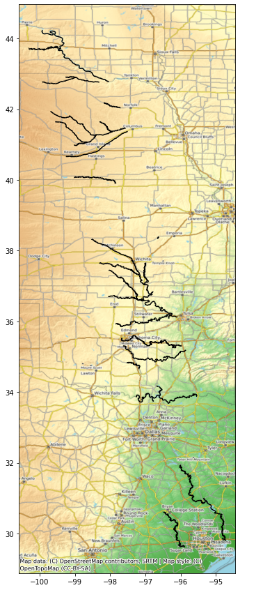
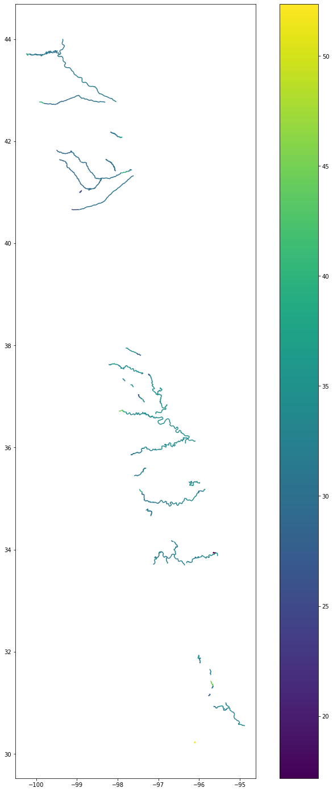
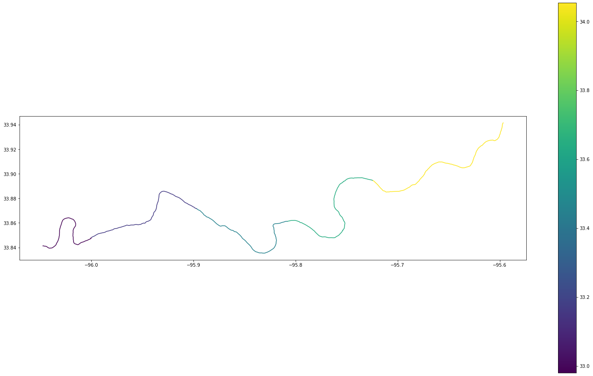
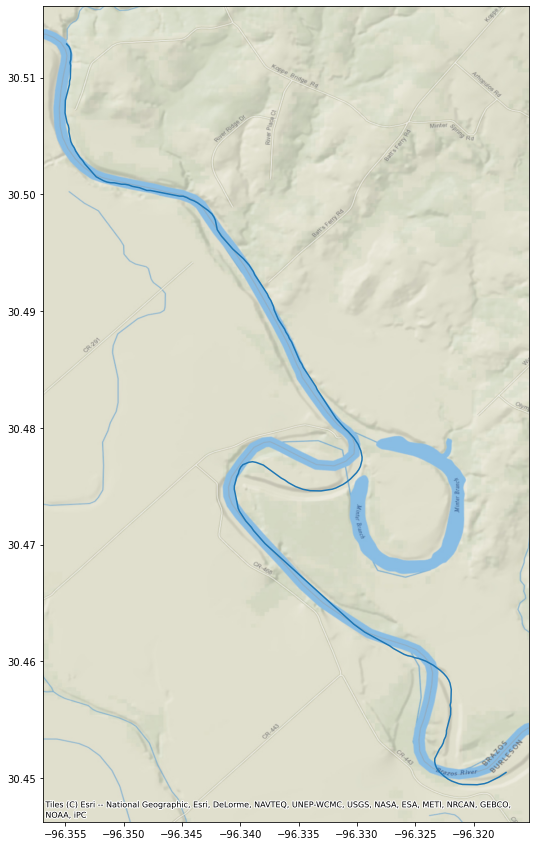
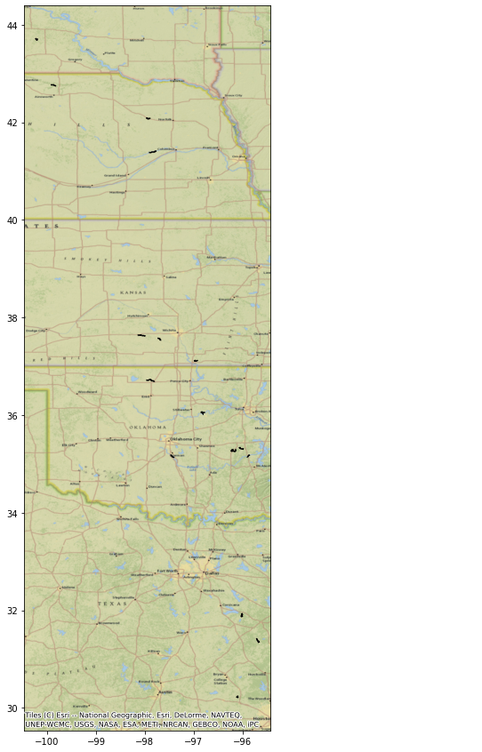
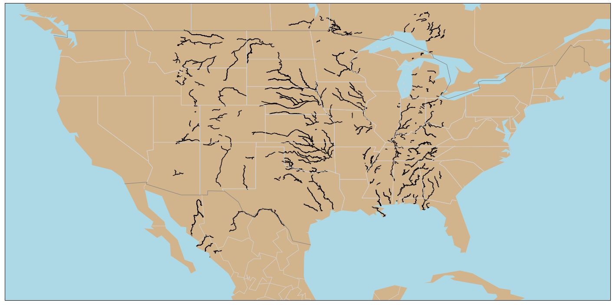

import os
import pandas as pd
import numpy as np
import geopandas as gpd
import matplotlib.pyplot as plt
import contextily as cxSWOT Simulated North American Continent Hydrology Dataset
From the PO.DAAC Cookbook, to access the GitHub version of the notebook, follow this link.
Finding ways to visualize SWOT Simulated Shapefile Dataset
Learning Objectives:
- Accessing SWOT shapefile hydrology dataset and visualizing it locally.
- Accessing & visualizing dataset through the use of Geopandas & Matplotlib.
This tutorial is looking to explore geospatial libraries and visualizing vector datasets without the use of a GIS desktop software.
Dataset:
SWOT_SIMULATED_NA_CONTINENT_L2_HR_RIVERSP_V1:
This SWOT simulated river data includes shapefiles of River Nodes and River Reaches. Shapefiles of SWOT sample data can be downloaded here. The single file this notebook will perform most analysis on can be downloaded here.
Setting up Environments
- Prior to running the notebook, the environments must be set correctly.
- This notebook can be ran using both Python 3.9 and 3.10 as long as the libraries are correctly installed.
- Utilizing Anaconda Navigator to create your enviroments. Accessing the Conda-Forge channel to install geopsatial libraries.
- GDAL and GeoPandas will direct and install majority of the libraries you will need, but some libraries will need to be installed by searching them individually.
Libraries Needed
Opening a Single Shapefile
Using Geopandas to open & read a single shapefile. (Change the path to your pre-downloaded shapefile)
River = gpd.read_file('C:\SWOT\SWOT_River_Reaches\SWOT_L2_HR_RiverSP_Reach_007_300_NA_20220814T210504_20220814T210907_PGA0_01.shp')
River| reach_id | time | time_tai | time_str | p_lat | p_lon | river_name | wse | wse_u | wse_r_u | ... | p_width | p_wid_var | p_n_nodes | p_dist_out | p_length | p_maf | p_dam_id | p_n_ch_max | p_n_ch_mod | geometry | |
|---|---|---|---|---|---|---|---|---|---|---|---|---|---|---|---|---|---|---|---|---|---|
| 0 | 74225000301 | 7.138265e+08 | 7.138265e+08 | 2022-08-14T21:0806Z | 33.916062 | -95.560044 | no_data | 3.495055e+01 | -1.000000e+12 | 2.515300e-01 | ... | 156.0 | 3097.993819 | 54 | 1461998.230 | 10753.251601 | -1.000000e+12 | 0 | 2 | 1 | LINESTRING (-95.53934 33.88031, -95.53966 33.8... |
| 1 | 74225000311 | 7.138265e+08 | 7.138265e+08 | 2022-08-14T21:0806Z | 33.906781 | -95.654646 | no_data | 3.405308e+01 | -1.000000e+12 | 5.495000e-02 | ... | 175.0 | 3701.568090 | 79 | 1477859.906 | 15861.676389 | -1.000000e+12 | 0 | 2 | 1 | LINESTRING (-95.59665 33.94170, -95.59665 33.9... |
| 2 | 74225000321 | 7.138265e+08 | 7.138265e+08 | 2022-08-14T21:0807Z | 33.870673 | -95.762974 | no_data | 3.364557e+01 | -1.000000e+12 | 2.726000e-02 | ... | 183.0 | 3908.298409 | 68 | 1491552.334 | 13692.428266 | -1.000000e+12 | 0 | 4 | 1 | LINESTRING (-95.72430 33.89448, -95.72463 33.8... |
| 3 | 74225000331 | 7.138265e+08 | 7.138265e+08 | 2022-08-14T21:0807Z | 33.851562 | -95.845656 | no_data | 3.345162e+01 | -1.000000e+12 | 3.449000e-02 | ... | 148.0 | 3991.344178 | 61 | 1503740.939 | 12188.604492 | -1.000000e+12 | 0 | 2 | 1 | LINESTRING (-95.80786 33.86129, -95.80818 33.8... |
| 4 | 74225000341 | 7.138265e+08 | 7.138265e+08 | 2022-08-14T21:0806Z | 33.866701 | -95.946894 | no_data | 3.316602e+01 | -1.000000e+12 | 2.511000e-02 | ... | 175.0 | 4193.042490 | 61 | 1515895.262 | 12154.323029 | -1.000000e+12 | 0 | 3 | 1 | LINESTRING (-95.89671 33.87151, -95.89704 33.8... |
| ... | ... | ... | ... | ... | ... | ... | ... | ... | ... | ... | ... | ... | ... | ... | ... | ... | ... | ... | ... | ... | ... |
| 480 | 75165000211 | -1.000000e+12 | -1.000000e+12 | no_data | 30.433862 | -96.288294 | no_data | -1.000000e+12 | -1.000000e+12 | -1.000000e+12 | ... | 80.0 | 370.935908 | 53 | 418067.216 | 10666.156902 | -1.000000e+12 | 0 | 1 | 1 | LINESTRING (-96.27241 30.40543, -96.27215 30.4... |
| 481 | 75165000221 | -1.000000e+12 | -1.000000e+12 | no_data | 30.479698 | -96.336497 | no_data | -1.000000e+12 | -1.000000e+12 | -1.000000e+12 | ... | 84.0 | 415.828931 | 53 | 428691.064 | 10623.847758 | -1.000000e+12 | 0 | 2 | 1 | LINESTRING (-96.31719 30.45052, -96.31751 30.4... |
| 482 | 75165000231 | -1.000000e+12 | -1.000000e+12 | no_data | 30.531514 | -96.369330 | no_data | -1.000000e+12 | -1.000000e+12 | -1.000000e+12 | ... | 67.0 | 475.710190 | 65 | 441697.761 | 13006.697340 | -1.000000e+12 | 0 | 1 | 1 | LINESTRING (-96.35467 30.51265, -96.35491 30.5... |
| 483 | 75165000241 | -1.000000e+12 | -1.000000e+12 | no_data | 30.560974 | -96.417506 | no_data | -1.000000e+12 | -1.000000e+12 | -1.000000e+12 | ... | 80.0 | 373.408224 | 49 | 451539.432 | 9841.670412 | -1.000000e+12 | 0 | 1 | 1 | LINESTRING (-96.39119 30.53292, -96.39150 30.5... |
| 484 | 75165000251 | -1.000000e+12 | -1.000000e+12 | no_data | 30.591646 | -96.453558 | no_data | -1.000000e+12 | -1.000000e+12 | -1.000000e+12 | ... | 84.0 | 551.788513 | 49 | 461358.159 | 9818.727520 | -1.000000e+12 | 0 | 2 | 1 | LINESTRING (-96.42988 30.58532, -96.42977 30.5... |
485 rows × 111 columns
Converting a Shapefile
If you want a more in depth view of the datasets attributes you can convert it to a CSV.
Also if you would like to open up the dataset as a GeoJSON, Geopandas can help transform the dataset.
River.to_csv("C:\SWOT\SWOT_Attributes.csv")River.to_file("C:\SWOT\SWOT.json", driver='GeoJSON')Plotting a Shapefile
Using Matplotlib to plot the shapefiles, then adding a basemap for context using the library Contextily.
Contextily offers a list of basemap providers that can be easily visualized.
https://contextily.readthedocs.io/en/latest/intro_guide.html
fig, ax = plt.subplots(figsize=(25,15))
River.plot(ax=ax, color='black')
cx.add_basemap(ax, crs=River.crs, source=cx.providers.OpenTopoMap)
Shapefile Attribute Visualization
Shapefiles have various attributes or variables with each column signifiying individual data values.
Previously we plotted by showcasing all the river reaches of that shapefile on the map.
You can also plot a shapefile based on a specific variable.
Within Matplotlib you can specifiy the column parameter based on the column within the data’s attributes.
For the example below, we will look at the column ‘wse’ which stands for water surface elevation.
#First, we set all -999999999999 values to nan so that the color variation shows for the simulated values
River["wse"] = River.wse.apply(lambda x: x if x > -10 else np.nan)fig, ax = plt.subplots(figsize=(15,25))
River.plot(column='wse', ax=ax, legend=True, cmap='viridis')<AxesSubplot:>
You can also specifiy which row of attributes you would like to plot using Pandas ‘.loc’ or ‘.iloc’.
fig, ax = plt.subplots(figsize=(25,15))
River.loc[1:5].plot(column='wse',ax=ax, legend=True)<AxesSubplot:>
Querying a Shapefile
If you want to search for a specific reach id or a specific length of river reach that is possible through a spatial query using Geopandas.
Utilizing comparison operators (>, <, ==, >=, <=).
You can zoom into a particular river reach by specifying it’s row of attributes. Here we specify reach id# ‘75165000221’ which is a section of the Brazos River in Texas.
Query = River.query("reach_id == '75165000221'")
Query| reach_id | time | time_tai | time_str | p_lat | p_lon | river_name | wse | wse_u | wse_r_u | ... | p_width | p_wid_var | p_n_nodes | p_dist_out | p_length | p_maf | p_dam_id | p_n_ch_max | p_n_ch_mod | geometry | |
|---|---|---|---|---|---|---|---|---|---|---|---|---|---|---|---|---|---|---|---|---|---|
| 481 | 75165000221 | -1.000000e+12 | -1.000000e+12 | no_data | 30.479698 | -96.336497 | no_data | NaN | -1.000000e+12 | -1.000000e+12 | ... | 84.0 | 415.828931 | 53 | 428691.064 | 10623.847758 | -1.000000e+12 | 0 | 2 | 1 | LINESTRING (-96.31719 30.45052, -96.31751 30.4... |
1 rows × 111 columns
fig, ax = plt.subplots(figsize=(25,15))
Query.plot(ax=ax, legend=True)
cx.add_basemap(ax, crs=River.crs, source=cx.providers.Esri.NatGeoWorldMap)
You can specify river reaches that have a water surface elevation greater than 35 meters.
WSE = River.query('wse > 35')
WSE| reach_id | time | time_tai | time_str | p_lat | p_lon | river_name | wse | wse_u | wse_r_u | ... | p_width | p_wid_var | p_n_nodes | p_dist_out | p_length | p_maf | p_dam_id | p_n_ch_max | p_n_ch_mod | geometry | |
|---|---|---|---|---|---|---|---|---|---|---|---|---|---|---|---|---|---|---|---|---|---|
| 47 | 74242200111 | 7.138265e+08 | 7.138264e+08 | 2022-08-14T21:0741Z | 35.317087 | -96.025428 | no_data | 35.15211 | -1.000000e+12 | 0.37004 | ... | 75.0 | 2698.101164 | 66 | 1825209.708 | 13152.428425 | -1.000000e+12 | 0 | 2 | 1 | LINESTRING (-95.97846 35.30313, -95.97879 35.3... |
| 49 | 74242200131 | 7.138265e+08 | 7.138264e+08 | 2022-08-14T21:0741Z | 35.272401 | -96.149649 | no_data | 35.44462 | -1.000000e+12 | 0.55727 | ... | 80.0 | 571.014323 | 46 | 1843850.674 | 9289.513641 | -1.000000e+12 | 0 | 2 | 1 | LINESTRING (-96.14746 35.30464, -96.14721 35.3... |
| 50 | 74242200141 | 7.138265e+08 | 7.138264e+08 | 2022-08-14T21:0741Z | 35.275389 | -96.208073 | no_data | 35.21224 | -1.000000e+12 | 0.16871 | ... | 80.0 | 402.586845 | 68 | 1857401.869 | 13551.195121 | -1.000000e+12 | 0 | 2 | 1 | LINESTRING (-96.17403 35.26340, -96.17436 35.2... |
| 81 | 74242300041 | 7.138265e+08 | 7.138264e+08 | 2022-08-14T21:0744Z | 35.164566 | -95.879457 | no_data | 35.37206 | -1.000000e+12 | 0.62036 | ... | 107.0 | 1305.874486 | 42 | 1793769.436 | 8357.799096 | -1.000000e+12 | 0 | 3 | 1 | LINESTRING (-95.84938 35.18503, -95.84964 35.1... |
| 102 | 74242300251 | 7.138265e+08 | 7.138264e+08 | 2022-08-14T21:0740Z | 35.153209 | -97.436113 | no_data | 39.51928 | -1.000000e+12 | 1.35283 | ... | 108.0 | 829.919971 | 51 | 2029738.323 | 10121.780860 | -1.000000e+12 | 0 | 2 | 1 | LINESTRING (-97.40017 35.12675, -97.40043 35.1... |
| 124 | 74248100191 | 7.138264e+08 | 7.138264e+08 | 2022-08-14T21:0727Z | 36.047936 | -96.814971 | no_data | 35.15695 | -1.000000e+12 | 0.06185 | ... | 148.5 | 985.453315 | 78 | 2054425.795 | 15640.389075 | -1.000000e+12 | 0 | 2 | 1 | LINESTRING (-96.76674 36.05285, -96.76707 36.0... |
| 165 | 74249200121 | 7.138264e+08 | 7.138264e+08 | 2022-08-14T21:0712Z | 36.707171 | -97.847587 | no_data | 39.86618 | -1.000000e+12 | 0.06973 | ... | 123.0 | 832.564957 | 57 | 2166118.950 | 11377.423667 | -1.000000e+12 | 0 | 2 | 1 | LINESTRING (-97.79766 36.69311, -97.79800 36.6... |
| 166 | 74249200131 | 7.138264e+08 | 7.138264e+08 | 2022-08-14T21:0712Z | 36.719942 | -97.930131 | no_data | 45.34975 | -1.000000e+12 | 7.46494 | ... | 124.0 | 1741.611817 | 42 | 2174504.465 | 8385.514839 | -1.000000e+12 | 0 | 3 | 1 | LINESTRING (-97.88911 36.73196, -97.88945 36.7... |
| 210 | 74249300261 | 7.138264e+08 | 7.138264e+08 | 2022-08-14T21:0658Z | 37.559008 | -97.698991 | no_data | 37.31830 | -1.000000e+12 | 0.00428 | ... | 92.0 | 1200.772490 | 51 | 2303196.062 | 10149.015676 | -1.000000e+12 | 0 | 2 | 1 | LINESTRING (-97.66441 37.53530, -97.66475 37.5... |
| 215 | 74249300311 | 7.138264e+08 | 7.138264e+08 | 2022-08-14T21:0656Z | 37.627488 | -98.028303 | no_data | 36.33513 | -1.000000e+12 | 2.16842 | ... | 63.0 | 233.823669 | 42 | 2349425.456 | 8384.876289 | -1.000000e+12 | 0 | 1 | 1 | LINESTRING (-97.98686 37.61930, -97.98720 37.6... |
| 216 | 74249300321 | 7.138264e+08 | 7.138264e+08 | 2022-08-14T21:0656Z | 37.638600 | -98.106747 | no_data | 36.09641 | -1.000000e+12 | 0.11889 | ... | 63.0 | 631.220135 | 44 | 2358152.710 | 8727.253685 | -1.000000e+12 | 0 | 3 | 1 | LINESTRING (-98.06652 37.63738, -98.06686 37.6... |
| 242 | 74249300801 | 7.138264e+08 | 7.138264e+08 | 2022-08-14T21:0708Z | 37.113844 | -96.957548 | no_data | 35.05791 | -1.000000e+12 | 0.06902 | ... | 63.0 | 296.741419 | 51 | 2182848.997 | 10283.378299 | -1.000000e+12 | 0 | 1 | 1 | LINESTRING (-96.99444 37.10534, -96.99410 37.1... |
| 269 | 74294200271 | 7.138263e+08 | 7.138263e+08 | 2022-08-14T21:0541Z | 42.078318 | -97.931605 | no_data | 37.77142 | -1.000000e+12 | 1.41024 | ... | 51.0 | 282.977781 | 55 | 3285195.849 | 11099.394970 | -1.000000e+12 | 0 | 2 | 1 | LINESTRING (-97.88812 42.07337, -97.88833 42.0... |
| 275 | 74294400061 | 7.138264e+08 | 7.138263e+08 | 2022-08-14T21:0553Z | 41.392167 | -97.835479 | no_data | 39.74193 | -1.000000e+12 | 0.00000 | ... | 152.0 | 5864.605686 | 77 | 3188369.749 | 15443.567738 | -1.000000e+12 | 0 | 2 | 1 | LINESTRING (-97.76012 41.40875, -97.76048 41.4... |
| 349 | 74295600201 | 7.138263e+08 | 7.138263e+08 | 2022-08-14T21:0524Z | 42.760592 | -99.870893 | no_data | 40.82342 | -1.000000e+12 | 2.88420 | ... | 228.0 | 5909.679915 | 54 | 3570218.378 | 10722.387331 | -1.000000e+12 | 0 | 2 | 1 | LINESTRING (-99.81652 42.74292, -99.81689 42.7... |
| 386 | 74295800141 | 7.138263e+08 | 7.138263e+08 | 2022-08-14T21:0507Z | 43.699405 | -100.216124 | no_data | 38.30095 | -1.000000e+12 | 10.35277 | ... | 127.0 | 1214.735618 | 47 | 3695005.134 | 9362.384395 | -1.000000e+12 | 0 | 2 | 1 | LINESTRING (-100.18767 43.70568, -100.18804 43... |
| 441 | 75140100401 | 7.138265e+08 | 7.138265e+08 | 2022-08-14T21:0849Z | 31.378090 | -95.684602 | no_data | 44.96841 | -1.000000e+12 | 0.00208 | ... | 80.0 | 375.277777 | 82 | 399697.389 | 16375.887635 | -1.000000e+12 | 0 | 1 | 1 | LINESTRING (-95.65686 31.34060, -95.65687 31.3... |
| 455 | 75140300011 | 7.138265e+08 | 7.138265e+08 | 2022-08-14T21:0839Z | 31.899540 | -96.012439 | no_data | 35.29524 | -1.000000e+12 | 0.00000 | ... | 67.0 | 511.629791 | 79 | 538860.706 | 15891.038850 | -1.000000e+12 | 0 | 1 | 1 | LINESTRING (-96.00043 31.86864, -96.00043 31.8... |
| 473 | 75165000141 | 7.138265e+08 | 7.138265e+08 | 2022-08-14T21:0907Z | 30.226423 | -96.104246 | no_data | 52.37545 | -1.000000e+12 | 5.08629 | ... | 92.0 | 858.963903 | 48 | 351257.312 | 9672.898906 | -1.000000e+12 | 0 | 1 | 1 | LINESTRING (-96.12550 30.21370, -96.12531 30.2... |
19 rows × 111 columns
fig, ax = plt.subplots(figsize=(25,15))
WSE.plot(ax=ax, color='black')
cx.add_basemap(ax, crs=River.crs, source=cx.providers.Esri.NatGeoWorldMap)
Bonus
Opening a folder with multiple shapefiles
- If you have multiple River Reaches or Nodes in a folder, it is possible to visualize all on one map.
- Utilizing both Glob and Pathlib libraries to read the folder, then using Pandas concat to merge the reaches to its own variable.
- Matplotlib Basemap offers the customization ability to create your own basemap.
https://matplotlib.org/basemap/users/geography.html
import glob
from pathlib import Path
import pandas as pd
# Direct folder path of shapefiles
folder = Path("C:\\SWOT\\SWOT_River_Reaches")
# State filename extension to look for within the folder, in this case .shp which is the shapefile
shapefiles = folder.glob("*.shp")
# Merge/Combine multiple shapefiles in folder into one
gdf = pd.concat([
gpd.read_file(shp)
for shp in shapefiles
]).pipe(gpd.GeoDataFrame)from mpl_toolkits.basemap import Basemap
fig, ax = plt.subplots(figsize=(25,15))
gdf.plot(ax=ax, legend=True, color = 'black')
map = Basemap(llcrnrlon=-130, llcrnrlat=20, urcrnrlon=-65.,urcrnrlat=52., lat_0 = 40., lon_0 = -80)
map.drawmapboundary(fill_color='lightblue', color="black")
map.fillcontinents(color='tan',lake_color='lightblue')
map.drawcountries(color='grey', linewidth=1)
map.drawstates(color='lightgrey', linewidth=1)<matplotlib.collections.LineCollection at 0x251e1a4ce80>
Next Steps
- This notebook has helped showcase how to visualize shapefile data without the use of a GIS desktop software.
- Showcasing different ways of plotting based on variables and adding context to the map.
- Local visualization was the first step, but the next goal is to move towards utilizing the cloud.